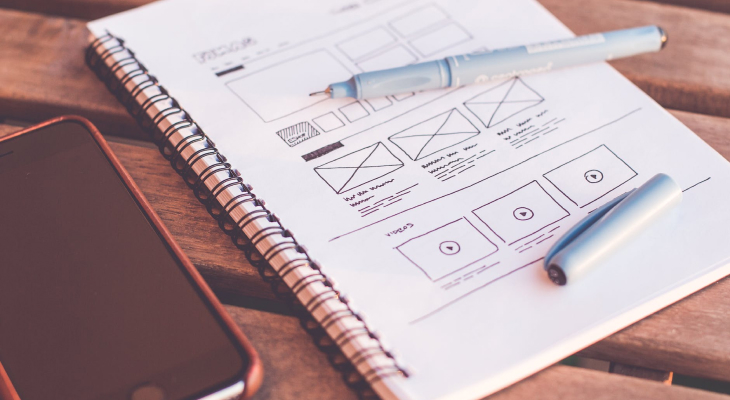

UX/UI Design
UX Design
UX Design, que significa "Design de Experiência do Usuário," é como uma espécie de arquitetura invisível por trás de todos os produtos e serviços que usamos, como sites, aplicativos de celular, e até mesmo coisas físicas, como controles remotos de TV.
Pense o seguinte, a garrafa de catchup era de vidro antes, e quando usávamos ou saía pouco ou saía demais. Isso é uma experiência ruim, certo?
Agora veja atualmente, que as garrafas são de plástico e você consegue com muito mais facilidade dosar a quantidade que você quer. Isso é experiência do usuário.
Quer outro exemplo?
Imagine que você está planejando uma festa em sua casa. Você precisa pensar em tudo para que seus convidados tenham uma ótima experiência, certo?
Você escolhe uma boa música, cria um layout agradável na sua casa, certifica-se de que a comida seja fácil de encontrar e gostosa, e se preocupa em garantir que todos se divirtam.
O Ux Design é um pouco como isso, mas para produtos e serviços digitais. Os designers de Ux se preocupam em criar experiências agradáveis e fáceis de usar para as pessoas quando elas interagem com um site, aplicativo ou qualquer coisa na tela de um computador ou celular.
Eles pensam em coisas como o layout, as cores, os botões e até mesmo como os menus funcionam, tudo para tornar a sua interação mais suave e agradável, como se estivessem planejando a festa perfeita para você, mas no mundo digital.
Então, em resumo, Ux Design é sobre criar coisas digitais que sejam fáceis de usar e proporcionem uma experiência agradável para as pessoas, assim como você planejaria uma festa incrível para seus amigos!
 Processo de criação de um produtoUI Design
UI Design, que significa "Design de Interface do Usuário," é como a parte visual e interativa de um produto ou serviço digital.
É a aparência e o jeito como você interage com algo na tela do seu computador ou celular.
Pense em um videogame, por exemplo. Quando você joga, você vê todos os gráficos, os botões que pressiona para controlar o personagem e os menus que usa para escolher as opções do jogo.
Tudo isso foi criado por um designer de UI. Eles escolhem as cores, os ícones, a disposição dos botões e todos os elementos visuais que tornam o jogo bonito e fácil de entender.
O UI Design é como o "visual" de um site, aplicativo ou qualquer coisa digital. É o que torna as coisas atraentes e fáceis de usar.
Um bom designer de UI pensa em como organizar as informações na tela, quais cores usar, como os botões devem parecer e até mesmo como as animações funcionam, tudo para tornar a experiência visual agradável e intuitiva para você, como se estivessem criando um livro com ilustrações atraentes.
Em resumo, UI Design se concentra na aparência e interatividade de produtos e serviços digitais, tornando-os bonitos e fáceis de usar, assim como um designer de revistas cria layouts atraentes e fáceis de ler para revistas impressas.